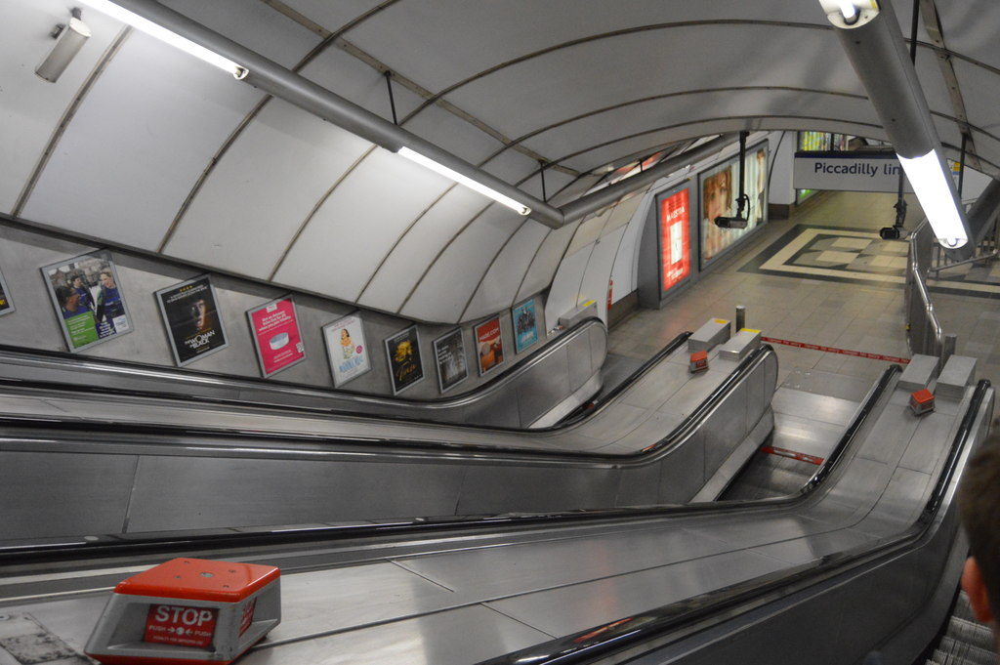
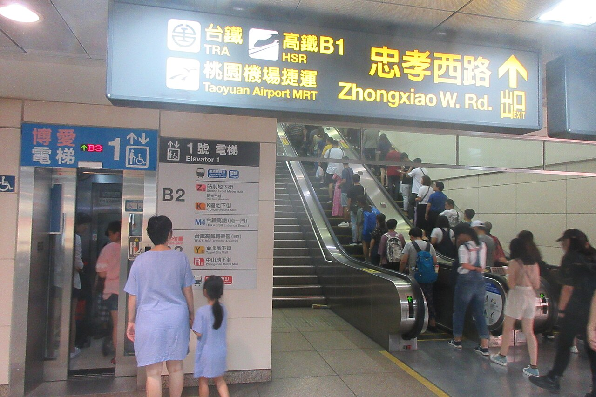

電扶梯該站一邊，還是兩邊都站？
「靠右站、左側走」是多數城市的默契，但倫敦地鐵的一場實驗發現：在夠長的電扶梯上，兩側都站人，全體反而更快。效率、安全與禮讓，在六十公分寬的踏階上互相拉扯。
尖峰時段的捷運站裡，常見一幕：電扶梯右側排起長長的人龍，左側卻空著，偶爾有人快步走上去。讓出左側的人覺得自己守規矩，兩側都站的人覺得隊伍明明可以更短。這個每天都上演的拉鋸，不是誰有沒有禮貌的問題，而是一道可以實際計算的運量問題：一條電扶梯，到底怎麼用才能送走最多人？各城市的答案並不一致，而且各自拿出了證據。
一、「站右走左」是一套沒人教過的規矩
倫敦地鐵公司（TfL）在 2016 年的新聞稿裡，把這套默契講得很白：倫敦地鐵的禮儀就是乘客靠右站立，把左側讓給想走的人。台北的情形類似：台北捷運公司 2019 年的新聞稿說明，公司宣導的主題是「緊握扶手、站穩踏階」，並未限制旅客的站立位置或是否行走；實務上，在高運量轉乘站的月台，約半數下車人潮從電扶梯左側步行疏散，其餘旅客在右側排隊等候，秩序良好。
也就是說，「站一邊、讓一邊」長期以來不是法規，而是一種乘客之間自發的分工：一條給站的人，一條給趕時間的人。它運作了幾十年，直到營運單位開始認真算帳，才發現這套分工在數字面前未必划算。
二、一條電扶梯的運量數學
把電扶梯想成一條連續輸送帶：KONE 的電扶梯踏階寬度有 600、800、1000 公釐三種規格；其中 600 公釐在 KONE 文件中註明因空間窄，不建議用於新式應用。[7]如果所有人都靠右站、左側留給步行者，那麼每個踏階平均只承載一人多一點；左側只有在「夠多人真的在走」的時候才補得上損失。步行者在移動中前後需要間隔，因此一條步行道每分鐘通過的人數，往往低於一條站滿人的站立道。
關鍵變數是「有多少人願意走」。電扶梯越長，願意走的人越少。TfL 引用的研究指出，當電扶梯的垂直高度超過約 18.5 公尺，鼓勵兩側站立可能更有效率，因為幾乎沒人想在這種高度上爬樓梯；此時左側若空著，就是實實在在的浪費。[4]反過來說，在短扶梯、步行者比例高的場合，保留步行道的損失就小得多。這道數學沒有放諸四海皆準的答案，答案隨扶梯長度和人群組成而變。
三、倫敦霍本站的三週實驗
TfL 把這道題目做成了實驗。霍本（Holborn）站是倫敦地鐵最繁忙的車站之一，每年超過 5,600 萬人次進出；站內通往大廳的電扶梯垂直高度 23.4 公尺，早已超過 18.5 公尺的門檻，因此絕大多數乘客寧可站著，左側長期閒置。2015 年 11 到 12 月，TfL 做了三週試驗，加派人力請乘客在兩側都站立。
結果超乎預期。TfL 的計算原本估計，平常每台電扶梯每分鐘約運送 80 人，理論上兩側站滿可提高到 110 人以上；實測紀錄是運量提升約 30%：同一台電扶梯在平日早上 8 點半到 9 點半平均載 2,500 人，改為兩側站立後同時段載了約 3,250 人。附帶效果是月台擁擠改善：試驗前車站一週要數度啟動「車站管制」（暫時阻止乘客進站），試驗三週裡只啟動過一次。[3]
2016 年 4 月起，TfL 把試驗延長為六個月，並保留第三條上行電扶梯給仍想步行的人。為了讓乘客配合，倫敦政經學院的行為科學團隊設計了各種訊息，從直白的「請勿在此電扶梯行走」到玩文字遊戲的「Standing? Outstanding!」，測試哪種說法最能改變習慣。

四、另一邊的帳：安全與機器
反對在電扶梯上行走的理由，主要不是效率，而是安全。JR 東日本在安全宣導頁面直接呼籲「不要在電扶梯上行走、請停下來」，理由是行走可能導致跌倒與碰撞事故。[5]日本埼玉縣更進一步：2021 年 3 月通過、同年 10 月 1 日施行的「電扶梯安全利用促進條例」明定，使用者必須以停下來的狀態使用電扶梯，管理者必須周知這項要求；條例授權知事對管理者指導、建議與勸告，等於把「不要走」從道德勸說升級成制度要求。[6]
至於另一個常見說法「大家都站右邊，機器會磨損不均」，台北捷運用保養紀錄正面回應過。北捷 2019 年的新聞稿指出，捷運使用的是重載型電扶梯，長期檢視機械元件的檢修紀錄，並未發現因乘客靠右站立、左側通行而影響元件壽命；即使左右鏈條延展有差異，也可透過張力器調整至均衡，加上每月定期預防保養，不致因此損壞。[2]換句話說，至少在台北捷運的設備條件下，「站一邊會傷機器」不成立。
五、台北的折衷：不禁止，但把兩側都填滿
台北捷運近年的路線介於倫敦的實驗與埼玉的禁令之間。北捷 2024 年 10 月的新聞稿宣布加強宣導「緊握扶手、站穩踏階」八字訣，明確表示電扶梯兩側皆可站立；在台北大巨蛋球賽、跨年散場等大型輸運場合，工作人員直接在電扶梯旁舉牌，引導旅客兩側站立、依序搭乘，北捷稱現場秩序良好。[1]
同一篇新聞稿也透露了下一步：研議在尖峰時段於台北車站等重要轉乘站，以標示與廣播加強宣導兩側均可站立，加速紓解人潮。值得注意的是，北捷始終沒有禁止行走，而是把「讓兩側都站滿」當成尖峰輸運的工具，把「趕時間走左側」保留為離峰與日常的彈性。這是一種務實的分層：效率歸效率，習慣歸習慣。

六、個人最快，不等於全體最快
電扶梯的難題，本質是「個人最適」與「系統最適」的落差：對一個趕時間的人來說，左側暢通永遠最快；但當扶梯長到沒什麼人走，這條保留車道就變成全體的損失。同樣的結構出現在很多地方：塞車時頻繁變換車道的人省了幾秒，整體車流卻因煞車連鎖反應變慢；開放大家搶先下車，常常比依序魚貫而下更耗時。
所以「該站一邊還是兩邊都站」其實是個條件句：扶梯多長、人潮多密、有多少人真的在走，決定了哪種規矩對全體划算。倫敦用 23.4 公尺的霍本站證明了一種極端，台北用「兩側皆可站立、不禁止行走」保留了另一種彈性，而埼玉選擇用條例把安全置於效率之前。三種答案背後，是三種對風險與時間的不同定價。
查證資料來源7 項
實際支持文中事實主張的來源，逐條標註支持的內容；文內如有 [數字] 標記，對應此處編號。
- 臺北捷運加強宣導電扶梯兩側皆可站立 感謝旅客相互尊重 共同維護良好捷運乘車文化（臺北大眾捷運股份有限公司新聞稿，2024-10-23） ↗
- 臺北捷運重載型電扶梯右側站立並未影響機械元件壽命 呼籲旅客緊握扶手站穩踏階（臺北大眾捷運股份有限公司新聞稿，2019-04-23） ↗
- Six month escalator trial at Holborn starts today（Transport for London press release, 18 April 2016） ↗
- London Underground to pilot new escalator arrangement at Holborn Tube station（Transport for London press release, 10 March 2016） ↗
- 安全に関するお願い：エスカレーター歩かず立ち止まろう（JR 東日本） ↗
- 埼玉県エスカレーターの安全な利用の促進に関する条例（埼玉縣官方條例說明頁） ↗
- KONE, “Escalator Planning Guide”（官方規劃手冊 PDF） ↗
延伸探討
把故事帶回自己的思考
下次搭上電扶梯，可以看看自己站的位置：你正在參與一場關於效率、安全與禮讓的即時投票。當你身後排起長隊、腳邊的左側空著時，你會選擇讓全體快一點，還是替可能存在的趕時間的人留一條路？你的城市用什麼方式回答這個問題，或許比答案本身更值得一看。